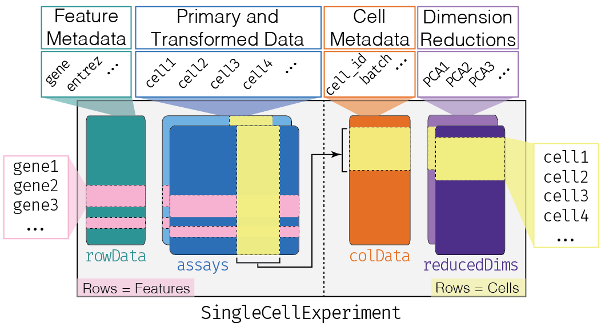

A_SingleCellDataRepresentation.RmdObjectives:
library(SingleCellExperiment)
library(TENxPBMCData)
sce <- TENxPBMCData("pbmc4k")
## snapshotDate(): 2020-10-02
## see ?TENxPBMCData and browseVignettes('TENxPBMCData') for documentation
## loading from cache
sce
## class: SingleCellExperiment
## dim: 33694 4340
## metadata(0):
## assays(1): counts
## rownames(33694): ENSG00000243485 ENSG00000237613 ... ENSG00000277475
## ENSG00000268674
## rowData names(3): ENSEMBL_ID Symbol_TENx Symbol
## colnames: NULL
## colData names(11): Sample Barcode ... Individual Date_published
## reducedDimNames(0):
## altExpNames(0):
The ‘counts’ matrix
counts(sce)
## <33694 x 4340> matrix of class DelayedMatrix and type "integer":
## [,1] [,2] [,3] [,4] ... [,4337] [,4338] [,4339]
## ENSG00000243485 0 0 0 0 . 0 0 0
## ENSG00000237613 0 0 0 0 . 0 0 0
## ENSG00000186092 0 0 0 0 . 0 0 0
## ENSG00000238009 0 0 0 0 . 0 0 0
## ENSG00000239945 0 0 0 0 . 0 0 0
## ... . . . . . . . .
## ENSG00000277856 0 0 0 0 . 0 0 0
## ENSG00000275063 0 0 0 0 . 0 0 0
## ENSG00000271254 0 0 0 0 . 0 0 0
## ENSG00000277475 0 0 0 0 . 0 0 0
## ENSG00000268674 0 0 0 0 . 0 0 0
## [,4340]
## ENSG00000243485 0
## ENSG00000237613 0
## ENSG00000186092 0
## ENSG00000238009 0
## ENSG00000239945 0
## ... .
## ENSG00000277856 0
## ENSG00000275063 0
## ENSG00000271254 0
## ENSG00000277475 0
## ENSG00000268674 0Essential manipulations
log10() transformed values.Annotation
head(rowData(sce), 3)
## DataFrame with 3 rows and 3 columns
## ENSEMBL_ID Symbol_TENx Symbol
## <character> <character> <character>
## ENSG00000243485 ENSG00000243485 RP11-34P13.3 NA
## ENSG00000237613 ENSG00000237613 FAM138A FAM138A
## ENSG00000186092 ENSG00000186092 OR4F5 OR4F5
library(dplyr)
colData(sce) %>%
as_tibble() %>%
head(3)
## # A tibble: 3 x 11
## Sample Barcode Sequence Library Cell_ranger_ver… Tissue_status Barcode_type
## <chr> <chr> <chr> <int> <chr> <chr> <chr>
## 1 pbmc4k AAACCT… AAACCTG… 1 v2.1 <NA> Chromium
## 2 pbmc4k AAACCT… AAACCTG… 1 v2.1 <NA> Chromium
## 3 pbmc4k AAACCT… AAACCTG… 1 v2.1 <NA> Chromium
## # … with 4 more variables: Chemistry <chr>, Sequence_platform <chr>,
## # Individual <chr>, Date_published <chr>Subsetting
ridx <- rowSums(counts(sce)) > 0 # rows with non-zero counts
sce[ridx,] # select rows, all columns
## class: SingleCellExperiment
## dim: 19773 4340
## metadata(0):
## assays(1): counts
## rownames(19773): ENSG00000238009 ENSG00000239945 ... ENSG00000276345
## ENSG00000271254
## rowData names(3): ENSEMBL_ID Symbol_TENx Symbol
## colnames: NULL
## colData names(11): Sample Barcode ... Individual Date_published
## reducedDimNames(0):
## altExpNames(0):Additional information in a SingleCellExperiment
tibble and tidyverse.
sessionInfo()
## R version 4.0.3 Patched (2020-10-13 r79345)
## Platform: x86_64-apple-darwin17.7.0 (64-bit)
## Running under: macOS High Sierra 10.13.6
##
## Matrix products: default
## BLAS: /Users/ma38727/bin/R-4-0-branch/lib/libRblas.dylib
## LAPACK: /Users/ma38727/bin/R-4-0-branch/lib/libRlapack.dylib
##
## locale:
## [1] en_US.UTF-8/en_US.UTF-8/en_US.UTF-8/C/en_US.UTF-8/en_US.UTF-8
##
## attached base packages:
## [1] stats4 parallel stats graphics grDevices utils datasets
## [8] methods base
##
## other attached packages:
## [1] dplyr_1.0.2 TENxPBMCData_1.8.0
## [3] HDF5Array_1.18.0 rhdf5_2.34.0
## [5] DelayedArray_0.16.0 Matrix_1.2-18
## [7] SingleCellExperiment_1.12.0 SummarizedExperiment_1.20.0
## [9] Biobase_2.50.0 GenomicRanges_1.42.0
## [11] GenomeInfoDb_1.26.0 IRanges_2.24.0
## [13] S4Vectors_0.28.0 BiocGenerics_0.36.0
## [15] MatrixGenerics_1.2.0 matrixStats_0.57.0
##
## loaded via a namespace (and not attached):
## [1] httr_1.4.2 bit64_4.0.5
## [3] AnnotationHub_2.22.0 shiny_1.5.0
## [5] assertthat_0.2.1 interactiveDisplayBase_1.28.0
## [7] BiocManager_1.30.10.5 BiocFileCache_1.14.0
## [9] blob_1.2.1 GenomeInfoDbData_1.2.4
## [11] yaml_2.2.1 BiocVersion_3.12.0
## [13] pillar_1.4.6 RSQLite_2.2.1
## [15] backports_1.2.0 lattice_0.20-41
## [17] glue_1.4.2 digest_0.6.27
## [19] promises_1.1.1 XVector_0.30.0
## [21] htmltools_0.5.0 httpuv_1.5.4
## [23] pkgconfig_2.0.3 zlibbioc_1.36.0
## [25] xtable_1.8-4 purrr_0.3.4
## [27] later_1.1.0.1 tibble_3.0.4
## [29] generics_0.1.0 ellipsis_0.3.1
## [31] withr_2.3.0 cli_2.1.0
## [33] mime_0.9 magrittr_1.5
## [35] crayon_1.3.4 memoise_1.1.0
## [37] evaluate_0.14 fansi_0.4.1
## [39] fs_1.5.0 textshaping_0.1.2
## [41] tools_4.0.3 lifecycle_0.2.0
## [43] stringr_1.4.0 Rhdf5lib_1.12.0
## [45] AnnotationDbi_1.52.0 compiler_4.0.3
## [47] pkgdown_1.6.1 systemfonts_0.3.2
## [49] rlang_0.4.8 grid_4.0.3
## [51] RCurl_1.98-1.2 rhdf5filters_1.2.0
## [53] rappdirs_0.3.1 bitops_1.0-6
## [55] rmarkdown_2.5 ExperimentHub_1.16.0
## [57] codetools_0.2-18 DBI_1.1.0
## [59] curl_4.3 R6_2.5.0
## [61] knitr_1.30 utf8_1.1.4
## [63] fastmap_1.0.1 bit_4.0.4
## [65] rprojroot_1.3-2 ragg_0.4.0
## [67] desc_1.2.0 stringi_1.5.3
## [69] Rcpp_1.0.5 png_0.1-7
## [71] vctrs_0.3.4 dbplyr_2.0.0
## [73] tidyselect_1.1.0 xfun_0.19